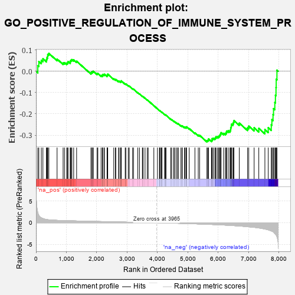
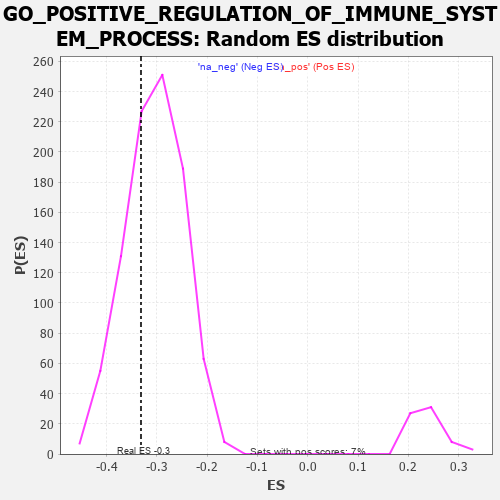

| | | Dataset | 7d |
| Phenotype | NoPhenotypeAvailable |
| Upregulated in class | na_neg |
| GeneSet | GO_POSITIVE_REGULATION_OF_IMMUNE_SYSTEM_PROCESS |
| Enrichment Score (ES) | -0.33151805 |
| Normalized Enrichment Score (NES) | -1.0876383 |
| Nominal p-value | 0.3179377 |
| FDR q-value | 0.7642031 |
| FWER p-Value | 1.0 |
Table: GSEA Results Summary

Fig 1: Enrichment plot: GO_POSITIVE_REGULATION_OF_IMMUNE_SYSTEM_PROCESS
Profile of the Running ES Score & Positions of GeneSet Members on the Rank Ordered List
| PROBE | GENE SYMBOL | GENE_TITLE | RANK IN GENE LIST | RANK METRIC SCORE | RUNNING ES | CORE ENRICHMENT | | 1 | RAC2 | | | 60 | 2.442 | 0.0261 | No |
| 2 | UBE2K | | | 94 | 1.739 | 0.0459 | No |
| 3 | FOXF1 | | | 176 | 1.136 | 0.0512 | No |
| 4 | RHOH | | | 228 | 0.987 | 0.0583 | No |
| 5 | DAPK2 | | | 343 | 0.754 | 0.0542 | No |
| 6 | ARNT | | | 357 | 0.741 | 0.0627 | No |
| 7 | SOX13 | | | 380 | 0.717 | 0.0698 | No |
| 8 | BAX | | | 387 | 0.711 | 0.0789 | No |
| 9 | MLH1 | | | 423 | 0.679 | 0.0838 | No |
| 10 | XRCC6 | | | 694 | 0.560 | 0.0571 | No |
| 11 | HMGB2 | | | 892 | 0.507 | 0.0389 | No |
| 12 | MATR3 | | | 937 | 0.498 | 0.0402 | No |
| 13 | HMGB4 | | | 1008 | 0.482 | 0.0379 | No |
| 14 | AKT1 | | | 1040 | 0.476 | 0.0405 | No |
| 15 | MEF2C | | | 1054 | 0.473 | 0.0454 | No |
| 16 | SRC | | | 1128 | 0.459 | 0.0424 | No |
| 17 | NCK2 | | | 1131 | 0.458 | 0.0485 | No |
| 18 | PSMD7 | | | 1152 | 0.454 | 0.0522 | No |
| 19 | PSMD2 | | | 1181 | 0.450 | 0.0548 | No |
| 20 | KAT7 | | | 1240 | 0.440 | 0.0535 | No |
| 21 | NKAP | | | 1337 | 0.422 | 0.0470 | No |
| 22 | PSMD4 | | | 1811 | 0.335 | -0.0087 | No |
| 23 | MSH2 | | | 1819 | 0.334 | -0.0050 | No |
| 24 | TRIM5 | | | 1852 | 0.327 | -0.0046 | No |
| 25 | PSMD6 | | | 1858 | 0.326 | -0.0007 | No |
| 26 | PAK3 | | | 1889 | 0.322 | -0.0001 | No |
| 27 | RAF1 | | | 2011 | 0.303 | -0.0113 | No |
| 28 | HMCES | | | 2036 | 0.300 | -0.0103 | No |
| 29 | PSME4 | | | 2143 | 0.285 | -0.0199 | No |
| 30 | SYK | | | 2186 | 0.278 | -0.0214 | No |
| 31 | C1QBP | | | 2189 | 0.278 | -0.0178 | No |
| 32 | ATAD5 | | | 2197 | 0.277 | -0.0149 | No |
| 33 | CREB1 | | | 2243 | 0.269 | -0.0169 | No |
| 34 | PSMF1 | | | 2251 | 0.268 | -0.0141 | No |
| 35 | ANO6 | | | 2339 | 0.255 | -0.0217 | No |
| 36 | DOCK8 | | | 2341 | 0.254 | -0.0183 | No |
| 37 | MIF | | | 2357 | 0.252 | -0.0167 | No |
| 38 | SIN3A | | | 2361 | 0.251 | -0.0136 | No |
| 39 | PSMD5 | | | 2560 | 0.218 | -0.0359 | No |
| 40 | VAV3 | | | 2614 | 0.210 | -0.0398 | No |
| 41 | PUM2 | | | 2627 | 0.209 | -0.0384 | No |
| 42 | DDX1 | | | 2718 | 0.196 | -0.0472 | No |
| 43 | CUL1 | | | 2735 | 0.193 | -0.0466 | No |
| 44 | NSD2 | | | 2784 | 0.185 | -0.0501 | No |
| 45 | AQP3 | | | 2796 | 0.184 | -0.0490 | No |
| 46 | FER | | | 2803 | 0.183 | -0.0472 | No |
| 47 | BRK1 | | | 2805 | 0.183 | -0.0448 | No |
| 48 | CPN2 | | | 2936 | 0.160 | -0.0592 | No |
| 49 | BTK | | | 2958 | 0.156 | -0.0598 | No |
| 50 | LEF1 | | | 3037 | 0.144 | -0.0677 | No |
| 51 | PROS1 | | | 3070 | 0.141 | -0.0699 | No |
| 52 | PSMD9 | | | 3179 | 0.125 | -0.0819 | No |
| 53 | AP1G1 | | | 3210 | 0.121 | -0.0841 | No |
| 54 | TAB1 | | | 3351 | 0.097 | -0.1006 | No |
| 55 | MED1 | | | 3405 | 0.089 | -0.1061 | No |
| 56 | FES | | | 3501 | 0.077 | -0.1172 | No |
| 57 | PQBP1 | | | 3526 | 0.072 | -0.1193 | No |
| 58 | MAPK3 | | | 3589 | 0.062 | -0.1263 | No |
| 59 | SKP1 | | | 3663 | 0.049 | -0.1350 | No |
| 60 | DHX9 | | | 3693 | 0.044 | -0.1381 | No |
| 61 | DGKZ | | | 3879 | 0.015 | -0.1615 | No |
| 62 | DDX58 | | | 3998 | -0.007 | -0.1764 | No |
| 63 | TAL1 | | | 4064 | -0.018 | -0.1845 | No |
| 64 | CSF1 | | | 4074 | -0.019 | -0.1854 | No |
| 65 | PDE4B | | | 4089 | -0.022 | -0.1868 | No |
| 66 | ABL1 | | | 4125 | -0.027 | -0.1909 | No |
| 67 | CRK | | | 4139 | -0.031 | -0.1922 | No |
| 68 | STX7 | | | 4147 | -0.033 | -0.1926 | No |
| 69 | ARPC2 | | | 4232 | -0.047 | -0.2027 | No |
| 70 | PAX5 | | | 4255 | -0.051 | -0.2048 | No |
| 71 | PCID2 | | | 4258 | -0.051 | -0.2043 | No |
| 72 | PSME3 | | | 4280 | -0.056 | -0.2063 | No |
| 73 | SPG21 | | | 4436 | -0.083 | -0.2249 | No |
| 74 | LRRK2 | | | 4467 | -0.087 | -0.2275 | No |
| 75 | PLPP4 | | | 4533 | -0.101 | -0.2344 | No |
| 76 | BAG6 | | | 4563 | -0.108 | -0.2366 | No |
| 77 | GATA3 | | | 4614 | -0.120 | -0.2413 | No |
| 78 | ARPC3 | | | 4659 | -0.129 | -0.2452 | No |
| 79 | LIMK1 | | | 4684 | -0.136 | -0.2464 | No |
| 80 | PLCG1 | | | 4770 | -0.151 | -0.2551 | No |
| 81 | PLCL2 | | | 4807 | -0.159 | -0.2575 | No |
| 82 | P2RX4 | | | 4813 | -0.161 | -0.2559 | No |
| 83 | CLU | | | 4889 | -0.174 | -0.2631 | No |
| 84 | VAMP8 | | | 4905 | -0.179 | -0.2626 | No |
| 85 | EP300 | | | 4941 | -0.186 | -0.2645 | No |
| 86 | XRCC5 | | | 4946 | -0.187 | -0.2624 | No |
| 87 | PRKDC | | | 4955 | -0.189 | -0.2608 | No |
| 88 | PDPK1 | | | 5043 | -0.207 | -0.2690 | No |
| 89 | DDX21 | | | 5231 | -0.252 | -0.2894 | No |
| 90 | ELMO2 | | | 5341 | -0.283 | -0.2994 | No |
| 91 | FZD5 | | | 5386 | -0.292 | -0.3010 | No |
| 92 | ROR2 | | | 5626 | -0.353 | -0.3267 | Yes |
| 93 | WNK1 | | | 5650 | -0.362 | -0.3246 | Yes |
| 94 | PSMD1 | | | 5674 | -0.367 | -0.3224 | Yes |
| 95 | CASP8 | | | 5678 | -0.369 | -0.3177 | Yes |
| 96 | VAMP7 | | | 5777 | -0.399 | -0.3247 | Yes |
| 97 | LAMP1 | | | 5796 | -0.404 | -0.3215 | Yes |
| 98 | ADA | | | 5798 | -0.405 | -0.3160 | Yes |
| 99 | SNX4 | | | 5834 | -0.415 | -0.3147 | Yes |
| 100 | ARPC4 | | | 5886 | -0.430 | -0.3153 | Yes |
| 101 | DOCK1 | | | 5908 | -0.438 | -0.3119 | Yes |
| 102 | STK11 | | | 5922 | -0.443 | -0.3075 | Yes |
| 103 | TTBK1 | | | 5969 | -0.460 | -0.3070 | Yes |
| 104 | XBP1 | | | 6011 | -0.475 | -0.3057 | Yes |
| 105 | RAC1 | | | 6036 | -0.484 | -0.3021 | Yes |
| 106 | JAG1 | | | 6060 | -0.494 | -0.2982 | Yes |
| 107 | CALR | | | 6077 | -0.499 | -0.2933 | Yes |
| 108 | FLOT2 | | | 6092 | -0.504 | -0.2882 | Yes |
| 109 | RAG1 | | | 6176 | -0.530 | -0.2914 | Yes |
| 110 | CDC42 | | | 6236 | -0.548 | -0.2914 | Yes |
| 111 | AP3D1 | | | 6261 | -0.558 | -0.2868 | Yes |
| 112 | STK39 | | | 6274 | -0.563 | -0.2805 | Yes |
| 113 | ELF1 | | | 6328 | -0.587 | -0.2792 | Yes |
| 114 | ISG15 | | | 6385 | -0.608 | -0.2779 | Yes |
| 115 | UBE2N | | | 6407 | -0.621 | -0.2720 | Yes |
| 116 | MBL2 | | | 6411 | -0.623 | -0.2638 | Yes |
| 117 | CSK | | | 6428 | -0.630 | -0.2572 | Yes |
| 118 | MALT1 | | | 6432 | -0.634 | -0.2488 | Yes |
| 119 | DYSF | | | 6481 | -0.654 | -0.2459 | Yes |
| 120 | DPP4 | | | 6501 | -0.663 | -0.2392 | Yes |
| 121 | TRPV4 | | | 6515 | -0.668 | -0.2316 | Yes |
| 122 | PAK1 | | | 6691 | -0.757 | -0.2435 | Yes |
| 123 | DNM1L | | | 6963 | -0.913 | -0.2655 | Yes |
| 124 | CCR2 | | | 7003 | -0.939 | -0.2575 | Yes |
| 125 | PTPRJ | | | 7180 | -1.054 | -0.2654 | Yes |
| 126 | CYLD | | | 7333 | -1.206 | -0.2681 | Yes |
| 127 | CD22 | | | 7534 | -1.449 | -0.2737 | Yes |
| 128 | MCU | | | 7644 | -1.637 | -0.2650 | Yes |
| 129 | RNF31 | | | 7744 | -1.895 | -0.2515 | Yes |
| 130 | PDE4D | | | 7764 | -1.944 | -0.2271 | Yes |
| 131 | MUC2 | | | 7802 | -2.066 | -0.2033 | Yes |
| 132 | TRAF6 | | | 7818 | -2.157 | -0.1754 | Yes |
| 133 | TRAF2 | | | 7861 | -2.481 | -0.1465 | Yes |
| 134 | FYN | | | 7881 | -2.622 | -0.1127 | Yes |
| 135 | MUC19 | | | 7900 | -2.797 | -0.0764 | Yes |
| 136 | PSMD3 | | | 7907 | -2.887 | -0.0373 | Yes |
| 137 | PSMD8 | | | 7931 | -3.286 | 0.0051 | Yes |
Table: GSEA details [plain text format]

Fig 2: GO_POSITIVE_REGULATION_OF_IMMUNE_SYSTEM_PROCESS: Random ES distribution
Gene set null distribution of ES for GO_POSITIVE_REGULATION_OF_IMMUNE_SYSTEM_PROCESS